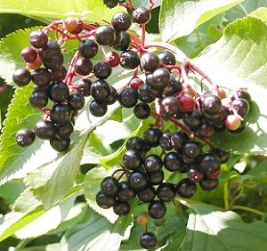
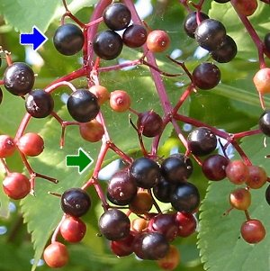

|
| Die Steinfrüchte werden im August reif.
Sie werden 'Holunderbeeren' genannt.
Der Fruchtstand besteht aus vielen kleinen Früchten mit roten Fruchtstielen.
 |  Die runden, schwarzroten Früchte sind sehr saftig und haben einen Steinkern.
Achtung: Die Samen sind leicht giftig.
|